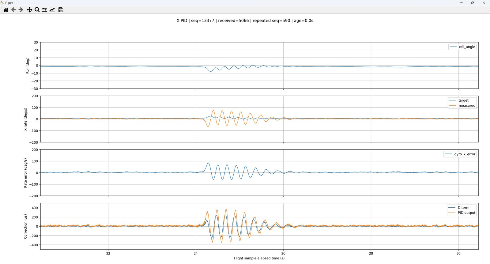
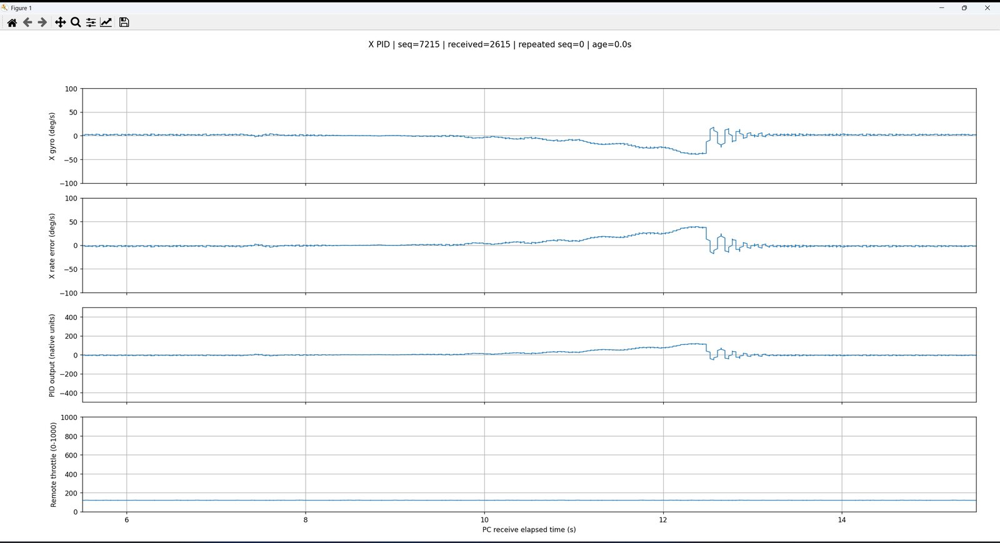
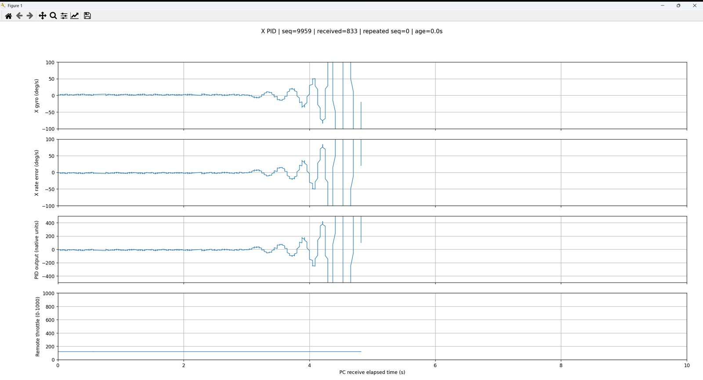
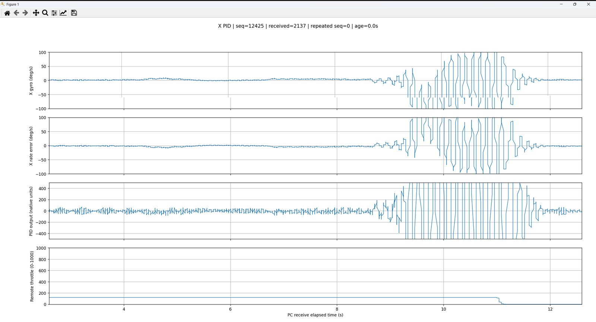
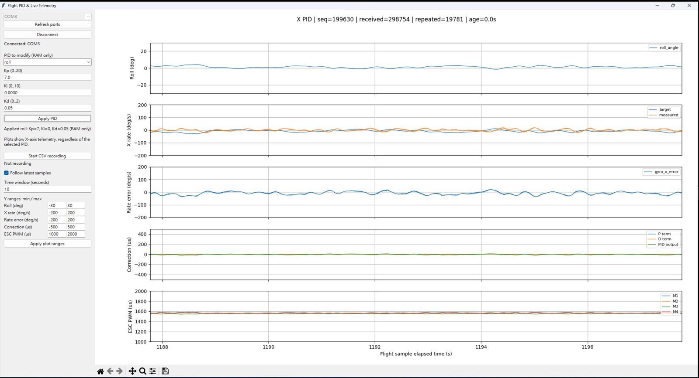

實驗資料與分析
本頁所有曲線都來自實際錄下的遙測 CSV（2026-09-21 / 22，測試架調參階段）。資料只記錄 X 軸（Roll）；統計與頻譜在瀏覽器中直接由原始資料計算。
本頁重點
- 實測 擾動後的角速度振盪主頻集中在 3.7–4.5 Hz，與陀螺低通的截止頻率（約 4.3 Hz）同一個量級。
- 實測 調參截圖顯示：內環 Kp 5 時振盪發散；Kd 0.5 時出現短暫劇烈振盪。
- 推算 這些記錄的增益（外環 ≈ 3、內環 ≈ 2.3–2.5）與目前原始碼（7 / 0.5）不同，屬於早期調參階段；最終實飛參數沒有對應的 CSV。
6.1資料來源與記錄方式
- 飛控每 6 ms 擷取一筆遙測快照（所選軸的角度、目標/量測角速度、誤差、P/D/總輸出、四路 PWM），經 ACK Payload → 遙控器 USB →
serial_scope.py/pid_tune.py存成 CSV。 - 時間軸
flight_elapsed_s來自飛控的time_ms；重複序號（同一快照被送兩次）在檢視器中去除。 - CSV 中的
gyro_x_*欄位是 X 軸角速度內環的資料；gyro_x_target即外環輸出。 - 原始檔在專案根目錄（被
.gitignore排除）；本站在docs/data/放了未修改內容的副本並改名，避免被同一規則忽略。
6.2互動：遙測資料檢視器
載入中…
桌機：在圖上拖曳框選放大、雙擊還原；手機：用「視窗」與「捲動」控制範圍，點一下圖表顯示數值。
本次記錄的統計
| 項目 | 值 | 性質 |
|---|
頻譜做法：依序號重建 6 ms 等間隔序列（缺口線性內插），去平均、加 Hann 窗後做 FFT。
6.3各次記錄摘要
| 記錄（原始檔名） | 長度 | 序號覆蓋 | 外環 Kp 推算 | 內環 Kp 推算 | 角速度頻譜峰 （2–10 Hz） | 備註 |
|---|---|---|---|---|---|---|
telemetry_p_2.3.csv | 21.1 s | 84.0% | 3.00 | 2.25 | 3.95 Hz | 11.8 s 擾動後衰減振盪 |
telemetry_p_2.33.csv | 63.8 s | 93.2% | 2.14* | 2.28 | 3.57 Hz* | 大角度擺動（−40° ~ +15°） |
telemetry_D_0.12.csv | 43.2 s | 100% | 3.00 | 2.50 | 3.72 Hz* | 開始時 roll ≈ −69° |
telemetry_D_0.13.csv | 33.2 s | 87.1% | 2.98 | 2.46 | 3.74 Hz | 穩態 + 16.6 s 擾動 |
telemetry_new.csv | 84.1 s | 92.3% | 2.99 | — | 4.45 Hz | 無 P 項欄位 |
telemetry.csv（舊格式） | 83.5 s | 96.0% | — | 3.0† | — | 電腦接收時間軸 |
推算 外環 Kp：以最小平方擬合「目標角速度 ≈ −k × roll 角 + c」（搖桿置中時外環 desire ≈ 0）。內環 Kp：P 項 ÷ 誤差的中位數（|誤差| > 5 °/s）。* 有大角度擺動或搖桿輸入，外環擬合與全頻段頻譜會受 1 Hz 以下的低頻運動影響（檢視器同時列出全頻段峰值）。† 輸出 ÷ 誤差的中位數。這些記錄沒有存下當時的增益設定，檔名中的 p / D 是記錄者的標註。
6.4約 4 Hz 角速度振盪分析

外環3_0_0.01。24.3 s 擾動後，量測角速度（橘）振盪約 6–7 個週期才衰減，與 telemetry_new.csv 同一事件吻合。觀察
- 三份以小角度擾動為主的記錄，角速度頻譜峰都落在 3.7–4.5 Hz（
p_2.33.95、D_0.133.74、new4.45 Hz）；另外兩份大角度記錄在 2–10 Hz 範圍內的峰值也落在 3.6–3.7 Hz。 - 擾動後的振盪是衰減的，代表內環穩定但阻尼不足。
- 內環 Kp 提高到 5 時振盪逐漸放大直到發散（下方截圖）。
推論（待驗證）
陀螺一階低通 α = 0.15 在 6 ms 取樣下截止約 4.3 Hz，在 4 Hz 時已落後約 39°。再加上馬達 / 槳的反應延遲、D 項 10 Hz 低通與一個控制週期的計算延遲，內環在 4 Hz 附近的相位裕度很小，提高增益就會在這個頻率附近失穩。控制頁的示意模擬可以重現同樣的趨勢，但模擬的機體參數是假設值。
要確認這個推論，需要做相同條件下只改變陀螺低通截止頻率的對照實驗，或以掃頻量測內環開迴路頻率響應（見研究延伸）。
y[k] = 0.15·x[k] + 0.85·y[k−1]、dt = 6 ms 計算的頻率響應 。6.5調參紀錄（工具截圖）
以下為作者調參時的 serial_scope.py / pid_tune.py 螢幕截圖（未修改，僅縮小）。參數取自原始檔名或資料夾名，格式為 Kp_Ki_Kd；舊版截圖的時間軸為電腦接收時間。




另有實際操作的 GUI 截圖：pid-tuning-gui.png；測試架照片見首頁。

6.6改善方向（由資料出發）
- 放寬或改用更好的陀螺濾波：把 α 提高（例如截止 20–40 Hz），改用二階低通或針對馬達頻率的陷波，降低內環相位落後。
- 提高 IMU 讀取率：內環與濾波以 500 Hz–1 kHz 執行，外環維持較低頻率。
- 以實驗驗證：每次只改一個參數，固定擾動方式（例如固定角度釋放），用相同指標比較——過衝、振盪頻率、衰減比、穩定時間。
- 補齊最終參數的記錄：以目前原始碼增益（7 / 0.5）重錄 Roll、Pitch、Yaw 三軸 CSV，並寫下測試條件。
完整的研究規劃見 07 研究延伸。
缺少的實驗資料
- 以目前原始碼增益（外環 7 / 0.05、內環 0.5 / 0.01）錄下的 CSV；現有 CSV 都是早期增益。
- Pitch（Y）與 Yaw（Z）軸的遙測記錄；目前只有 X 軸。
- 每次記錄的條件說明：測試架或自由飛行、是否裝槳、油門、電池電壓、擾動方式。
- 實飛時的遙測與四路 PWM；影片與資料的時間對照。
- 步階響應（搖桿階躍）記錄，用來量過衝、上升時間與穩定時間。
- 任務執行時間（CPU 負載）與無線封包遺失率的量測。
- 原始影片
飛行測試影片合輯.mp4（約 181 MB）超過 GitHub 單檔 100 MB 上限，本站改連 YouTube。
6.7本機預覽注意事項
檢視器以 fetch() 讀取 CSV，直接用 file:// 開啟 HTML 時瀏覽器會阻擋。請在專案根目錄執行：
python -m http.server 8000 --directory docs然後開啟 http://localhost:8000/experiments.html。發布到 GitHub Pages 後不需要額外設定。